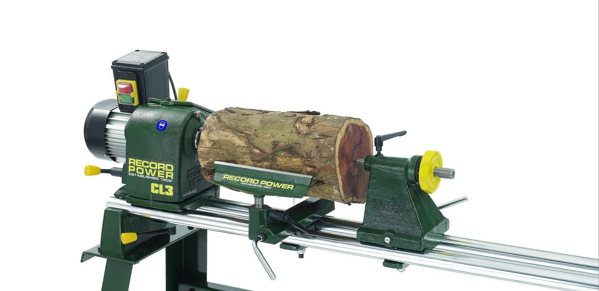

Eisenwaren · Burgdorf
Das richtige Werkzeug macht den Unterschied.
Elektrowerkzeuge, Schliesstechnik, Pumpen und vieles mehr: Entdecken Sie das Sortiment der E. Seiler AG.
Sortiment ansehenUnser Sortiment
Für Arbeit, Haus und Werkstatt.
01
Werkzeuge
Elektrowerkzeuge, Schnitzwerkzeuge und Drechselbänke von Record.
02
Haustechnik
Pumpen, Holzkochherde und 3D Luftbefeuchter.
03
Sicherheit & Alltag
Schliesstechnik, Tresore und Briefkästen.

Qualität · Beratung · Service
Seit 1948 in Burgdorf.
Die E. Seiler AG steht für Qualität, Beratung und Service. Fragen zum Sortiment besprechen Sie am besten direkt mit dem Fachgeschäft.
Vor Ort
Hohengasse 31
3400 Burgdorf
Aktuell: Betriebsferien19. September bis einschliesslich 5. Oktober 2026. Regulär wieder geöffnet ab 6. Oktober 2026.
Reguläre Öffnungszeiten
MontagGeschlossen
Dienstag-Freitag08:30-12:00
13:30-18:30
13:30-18:30
Samstag08:30-16:00 durchgehend
Kontakt
Was suchen Sie?
034 420 13 00